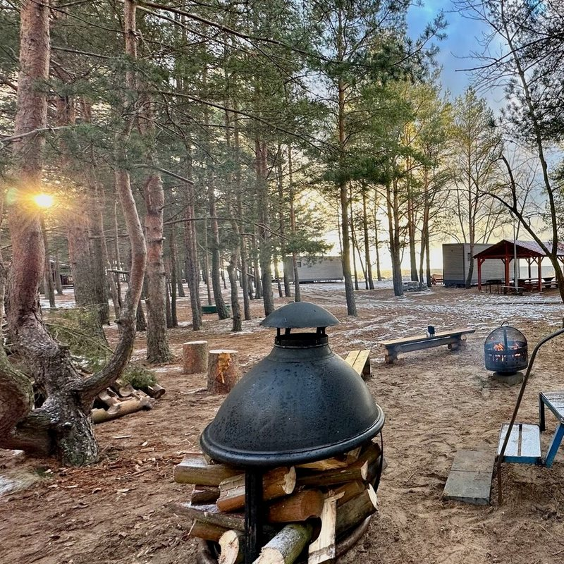

Сфера у залива
Отапливаемый глэмпинг с террасой на сто метров и видом на залив и северное сияние. Рядом — сауна, беседка с камином и мангальные зоны.
- Глэмпинг «Атмосфера»сфера с отоплением, зона для диджеядо 20 гостей
- Сауназона отдыха и свой огороженный дворикот 3 часов
- Беседка с каминомдля семейных и детских праздниковдо 30 гостей
- Мангальные зоныстолы с видом на залив, летом и зимойсвой мангал
Полупансион для гостей · Wi-Fi · круглосуточная стойка регистрации